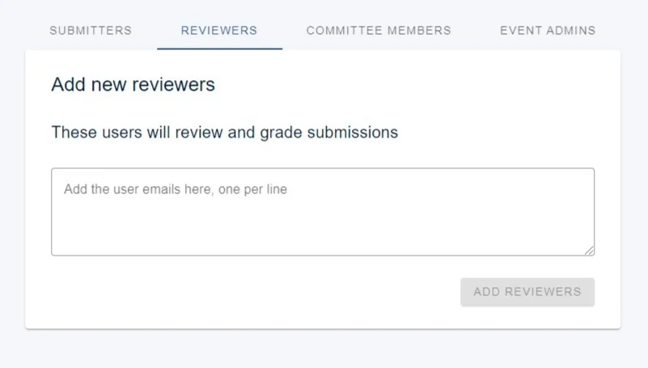
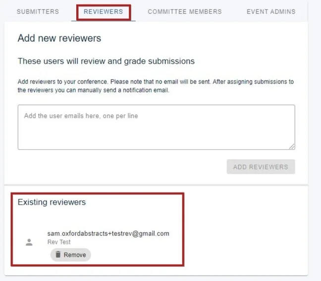
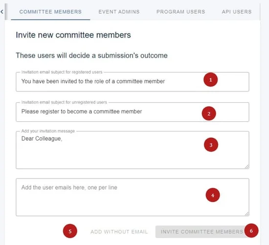

Manage users
Clicking on the Users option in the menu in the event dashboard allows you to view, add and remove reviewers, committee members, event administrators, and API users.#
The guidance below is for event administrators/ organisers. If you are an end user (eg. submitter, reviewer, delegate etc), please click here.
Go to Event dashboard → Event Setup → Users.
NB: There are tabs for each user type, which will vary according to which package you have.
The Submitters tab is for restricting who is permitted to submit.

Reviewers
In the Reviewers section, enter or paste the email address of the person(s) you wish to invite as a reviewer. To invite multiple reviewers, list their emails on separate lines.
To enable Committee Members to also become Reviewers, please follow these steps.
Please note: this will add the user as a reviewer but not notify them. You must trigger email notification of reviewers in the emails system.
If you wish to remove any reviewer, just click on the Remove button under the chosen reviewer.

If a user has been invited but has not yet registered on the Oxford Abstracts system, only their email will be visible and Not registeredwill be shown under their email address. Once they have signed up, their first and last names will be shown and the Not registeredtext will disappear.
Committee, Event admins, API users
Adding these users is done in a similar way. Using the Committee Member, Event Admin or API User tab :
1) Enter the email subject for registered users.
2) Enter the email subject for unregistered users.
3) Enter the message.
4) Add the email addresses of your committee members.
You then have the option to either 5) add them without emailing them a message, or 6) sending the message.

Event admins works in the same way except there is no option to add without sending a message.
Should you require any further assistance, please contact our support desk via our Contact Form.

Common questions#
How do I add committee members to the software?#
See Manage users
How do I give someone admin rights to the event?#
See Manage users.
Did this page solve it?
Thanks — this helps us fix it.
Didn't solve it? Ask our support team
No question is too small, and there's no charge for asking. Raise a ticket and someone who knows the software will pick it up.